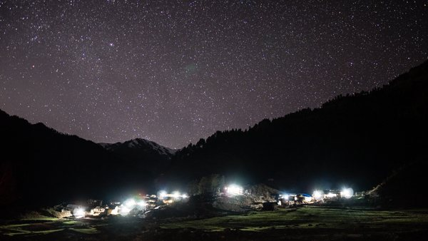
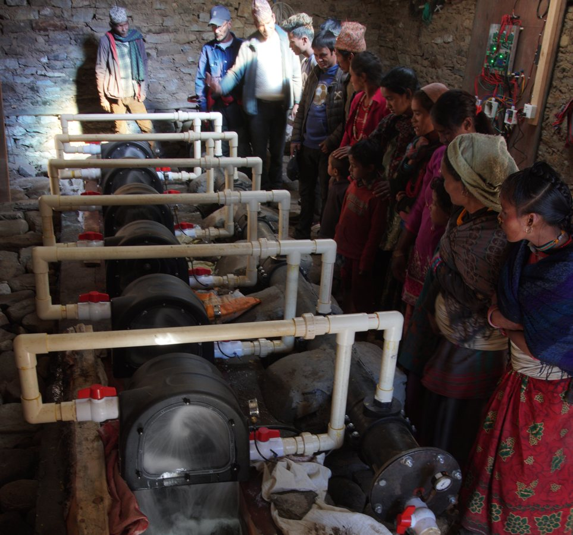
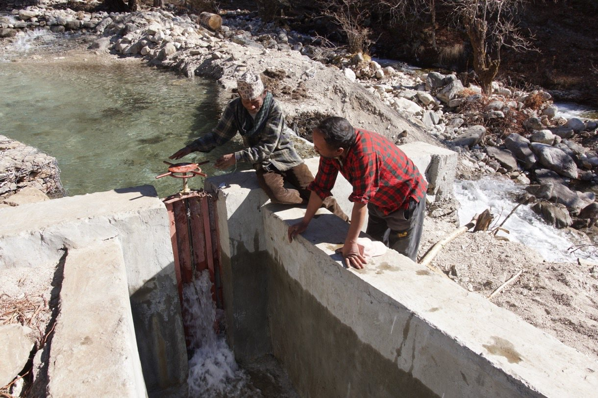
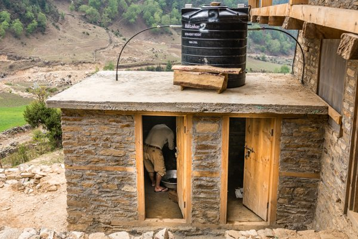
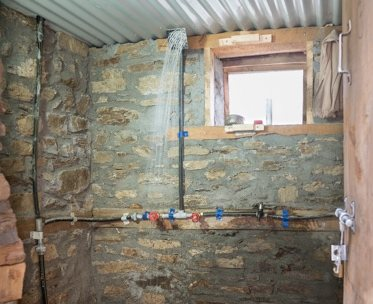
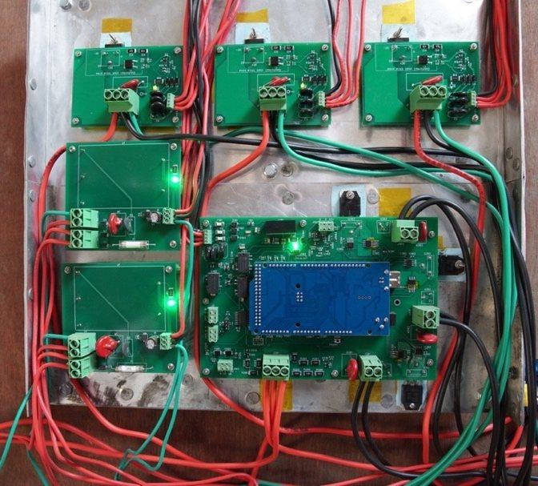

Writing · Engineering that serves
People were dancing in the showers
What a remote Himalayan village taught me about building technology that lasts.

Moharigaun is a small farming village perched at about 10,000 feet in the Himalayas of northwestern Nepal. It is one of the most remote places in the world.
The nearest airstrip is in the town of Jumla. From there, most people simply walk the rest of the way, about 16 miles up into the mountains. A rough dirt track covers part of the route, but only in the dry season, and only on foot, by motorcycle, or by farm tractor. For about half of every year, the monsoon rains cut the region off almost completely.
About 200 people live in Moharigaun, in roughly 40 households. Many had never ridden in a car. Most had never held a screwdriver. After dark, families lit their homes the way their grandparents had, by burning resin-soaked wood indoors and filling their homes with smoke.
This is a story about bringing them electricity. But it is really a story about something harder: making sure it lasts.
- 10,000 ftup in the Himalayas
- ~200people in about 40 households
- ~8 yearsand still running
- ~100%of the power put to use
The lights that go out
The mountains of western Nepal have one thing in abundance: water rushing downhill, day and night. So when a remote Himalayan village finally gets electricity, it almost always comes from a small hydroelectric plant, often one subsidized by the government.
Across the region, our team had watched the same story unfold again and again.
For a few months, everything changes. There is light after dark, and phones can be charged. A village that has always lived by daylight suddenly has evenings.
Then something breaks.
In one village, a landslide tears through the open canal that feeds the turbine. In another, the power lines, bare wire strung on dead trees, come down when the trees rot. Elsewhere, a drive belt snaps. In one case, the replacement belt cost $800, about as much as an average Nepali earned in a year. With no plan to pay for repairs, the village had no way to replace it. The system sat silent. Eventually, systems like that are taken apart and sold for scrap.
This isn’t rare. Many village plants in the region stop working within three months to a year of being switched on.
Imagine waiting your whole life for electric light, and then watching it disappear before the year is out.
A team with a purpose
The people behind this project didn’t want Moharigaun to become one more village where the lights went out.
The project was led by Dr. Alex Zahnd, whose nonprofit, RIDS-Nepal, had been working alongside Moharigaun since 1998. Together with the villagers, they had built smokeless stoves, clean-water systems, latrines, and greenhouses that stretched the growing season from three months to ten. Over two decades, they had earned the village’s trust. Electricity was the next step, and everyone involved was determined to get it right.
So the team studied why the other systems had failed, one by one, and started with a different question. Not “How do we bring electricity to a remote village?” but:
How do we build a power system that keeps working when the engineers can’t get back?
Built to survive
Every design decision came back to one test: what happens when this fails and no one from outside can come?
Six small turbines instead of one big one. If one breaks, the others keep the village lit while it is repaired, and the village can add more as it grows. (Each turbine makes about 1.1 kilowatts, 6.6 kilowatts in all, enough to light every home, charge everyone’s phone, and heat water.)

No belts to snap. Each turbine drives its generator directly. These turbines cost more up front, but they remove the weak link that had killed so many other systems.
Everything protected from the mountain. Instead of an open canal, the water comes down through a long plastic pipe, buried wherever the rocky ground allowed, safe from landslides and out of the farmers’ fields. It was joined by hand on the mountainside, one heat weld at a time. (About 490 meters of pipe, dropping 47 meters, roughly the height of a 15-story building.) Instead of wires on dead trees, the power lines are buried and armored.
No dam, and the river stays alive. Dams can flood valleys, block fish, and change a river for good. This team chose not to build one. Only about a tenth of the stream is diverted to the turbines, and the rest keeps flowing through the valley as it always has. The team didn’t want to bring power to the village at the cost of the land and water it depends on.

A village that owns its power. Every household gave 100 days of labor to build the system and a new community center. Each family was to pay a small monthly fee, less than the price of a cup of coffee, so there would always be money for repairs. (150 Nepali rupees, about $1.36 at the time.) The villagers decided on their own that better-off families would help pay for the poorest. They also chose their own operators, who were trained to clean the intake, flush the pipes, and grease the bearings.
The problem that comes at night
There was one more problem to solve, one most people never think about. A small hydro turbine makes electricity whether anyone is using it or not.
Late at night, when families switch off their lights, the turbines suddenly have nothing to push against. They spin faster and faster, and the voltage shoots up, enough to make light bulbs pop and to destroy the equipment in moments. (The voltage can climb about 6 volts every thousandth of a second.)
The usual solution in Nepal is to burn the extra power off as waste heat at the turbine house, far from the village. Many systems throw away most of what they generate. (One study of a typical village system found that only about 4 percent of its power was put to real use.)
In Moharigaun, that extra power went to work instead. A controller watched the turbines thousands of times every second. When the village wasn’t using the power, it sent the surplus to heat water tanks and warm the community center. If everything else failed and the voltage kept climbing, a final failsafe stepped in and safely sent the excess into the river. The equipment survived, and no one had to walk out in the dark to restart anything. (Nearly 100 percent of the power generated was put to use.)
For years, a satellite link let the team watch over all of it from the other side of the world. Data traveled by satellite to Switzerland and on to California, so even when the monsoon closed the roads, the system was never out of sight.
“People were dancing in the showers”
Much of that surplus power went into hot water.
For the first time, the people of Moharigaun had hot showers. At the celebration when the system opened, the project’s paper recorded the moment in one simple line:
“People were dancing in the showers.”


Nothing about it was easy
In the technical papers, it all sounds tidy. It wasn’t.
Flooding and harsh weather forced the team to abandon its first attempt to install the system in 2018. When they finally got it in, one of the control boards failed, and part of the system had to wait a full year for a replacement to make the journey.
Then electrical interference began scrambling the messages between the boards, corrupting up to 90 percent of the commands. Because the system had been designed to recognize garbled messages and ignore them, nothing was damaged, and the team was able to fix the problem on site, in a village where even sending an email is difficult.
There was even a supply scare. Some of the grease meant to keep the turbines running turned out to be counterfeit. One container, as the paper notes, “actually had a chili in it!”
Still running
And yet it worked.
The team finished installing and tuning the system just before the COVID-19 pandemic shut down travel around the world. For a long time after that, no one from outside could reach the village, and the system kept running anyway.
Today, nearly eight years after it was first switched on, it is still running and generating power. It carried the village through a global pandemic, in a place where systems like it usually fail within a year. Neighboring villages and local government officials have come to see how it was done.
The people who made it happen
This was the work of many hands.
Dr. Alex Zahnd led the project. His decades of work with the village, and the trust he had built there, made everything else possible.
Dr. Rick Sturdivant, my colleague at Azusa Pacific University, built the satellite monitoring that let us see how the system was behaving from half a world away.
Mark Stambaugh of RIDS-USA co-designed the control boards with me. Our part of the work often meant mailing hardware back and forth across the country. Mark would send the boards from Idaho to me in California, where I wrote the software and tested it. When a board arrived damaged, or broke during testing, it went back in the mail to be repaired, and then came back to me again. We worked through each problem together over email and conference calls, long before that became the normal way to work. Only when the boards were finally right did they make the long trip to Nepal and up the mountain.

Before the boards even arrived, I was testing the software on my own workbench to make sure it could react fast enough. (Here is a video of one of those early tests. Fair warning: it is far more exciting to an engineer than to anyone else.)
Our students at Azusa Pacific were deeply involved throughout. They worked on the satellite monitoring and on the network of sensors and controllers that kept the system running, and they co-authored research papers on the work. They learned what engineering looks like when real people depend on it.
Most of all, the people of Moharigaun dug the trenches, carried the materials, gave their labor, and made the system their own.
My own part was one piece of that larger effort: the controller that sent surplus power to heat water for the showers and the community center, and the failsafe that protected the turbines when everything else went wrong.
I was especially glad to learn that the idea behind that failsafe has since been turned into a commercial product, now protecting other small hydro systems.
I am deeply grateful to have been part of it. It is one of the most meaningful things I have ever worked on.
What it taught me
I’ve spent my career moving between engineering and business: at Bell Labs, as a technology executive, and now in higher education. Moharigaun is one of the clearest lessons I know of why those two worlds need each other.
The turbines were never the hard part. What made the difference was everything around them: a system built to survive failure, people in the village trained to run it, and a community that owned it from the first day.
A brilliant machine with no plan for repairs will be dark within a year. A modest one, built with care and with the people it serves, can change a village.
Not everything went the way we hoped. As with any pilot, some of our ideas worked even better than expected, and others didn’t work out as planned. We learned from both, and those lessons will make the next systems better.
That is what I hope for our faculty and students today. I want them to take on projects that make a real difference in people’s lives. I want them to work alongside the people they serve, and to build things that are still working long after the ribbon-cutting and after the engineers have gone home. Good technology solves the problem you can see. Good business and good leadership solve the problems that show up afterward.
High in the Himalayas, the water keeps coming down the mountain, and for nearly eight years it has been turning into light and warmth.
Photos: Moharigaun pico-hydro project team.